| 55歳の私から伝えたい手芸力／スタイル作り編: 手芸の原動力を探るエッセイ (87bunko出版) | |
| 遠藤 紀子 | |
| (2017) | |
5 5 歳の私から伝えたい
手 芸 力
スタイル作り 編
遠 藤 紀 子
｢作ること｣ は、
起・承・転・結 の ストーリー
作るためのエネルギーが、
結局 自分を作っている 。
人生を半世紀過ぎて、
これからの私の手芸人生のため、
また、どなたかのため、
まとめておきたかったことを
「手芸力」としてお伝えします。
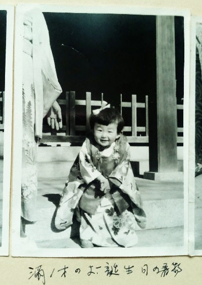
佐野市 朝日森天満宮にて
◎ もくじ
はじめに
3 0 数年も前のことですが、学校を出たあとといっても中退し、コサージュ・デザイナーとして働き出しました。
なつかしい言葉になったかもしれない 「 D C ブランド」、その次から次へのオーダーと、空き時間には個展の作品を、作りに作った時期でした 。 2 0 代前半という年齢でファッションショーを見たり、取引先の素敵な担当者に接したりするその７年半は、渋谷という土地柄もあって、ワクワクとドキドキ。「私」にとって貴重な時間でした。
けれど、先へ先へと急ぐその世界は、「私の居場所ではない」と心が分かってしまいました。
同じ布で作る花たちだけれど、私のやりたいことは、そうなんです、 「手芸」。
2 8 歳、自分の気持ちのままに動けるよう、会社をやめました。
飽きっぽいのも味方につけて、さまざまな材料を手にし、私の作る花たちは「コサージュ」という枠に納まらなくなって、「花手芸」となりました。
4 0 歳くらいの頃、「私を動かしてきたものは何？」と自問自答が始まりました。
カワイイとか、オシャレとか、それだけが欲しかったんじゃない。
「手芸の中に何がある？」
やさしくて、温かで、それがあって幸せで、力になり、生きる姿勢になっている。そんな「私を動かしているもの」を、知りたくなったのです。
そこから早く も 1 0 数年、便利や情報は、より加速化、形の有るものは電子化。未来はまだまだ変化、進化、さらに無人化。
けれど、手間をかける「手作り」がないがしろにと思いきや、材料キットや道具も検索すれば有り余るほど出てくるし、ハンドメイドのネットショップは大にぎわいで、クラフトイベントは、目がくらむほど巨大化。
私は、世の中の動きに感じる不安感や違和感もすこし伝えながら、私自身が、私の中で、「私の手芸」という真実を見いだそうとしていることを伝えたいのです。
私たちは、小さな手芸の温かさを、見逃していないでしょうか。
私を作ってきた「手芸」について、お話ししようと思います。
スタイル作り編では、私がどんな育ち方をしてどんな出来事を経験してきたかをお伝えし、そのあと、作ることについて思うことを「作り方」として書きました。
201 7 年内には、続編、「センス磨き編」では、「学び方」、「素直に生きる編」では、「生き方」について思うことをまとめたいと思っています。
１章 私が歩いてきた道
5 5 歳まで作ってきました、
花も自分も！
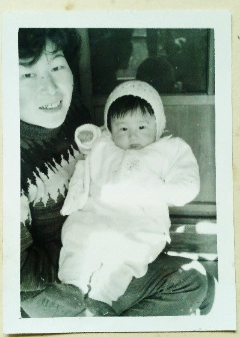
母 2 7 歳、手製のニットキャップ
●１ 母からの手作りまみれな幼少期
私、生まれたのは、およ そ 5 5 年前。ところは、栃木県佐野市という小さくて静かな街。
歴史好きの父と、田舎町で手芸教室を仕事にした母。そんな間に育ちましたから、今があるのは、そのせい？でしょうね。明治生まれの祖母は、着物の洗い張り、布団の打ち直しくらい日常的にやっていました。それが当り前の時代だったけれど、「作る楽しさ」を学んだのは、やはり、「家族」からだということです。
子供の頃、セーターはほとんど母の手製。手編みか、若い方には想像もつかないであろう、左右にガーガーならす編み機で編んだもの。
幼稚園、お遊戯会でのクラスの記念写真。ななめになるように言われているのに、片方の肩が隣の子の後ろになっているのが気に入らなくて、そちらもぐいっと前に出しています。両肩が出て、でんと構えた私のセーターは、もちろん母の手編み。
「そのセーターをご覧に入れたかった」という美談にしたかったけれど、ここはうまく納まらず、チビの頃から前に出たがる性格のようです。
夏の旅行は、母と弟とおそろいの服。父のワイシャツをリメイクしたブラウスに、汽車ぽっぽの刺繍。パジャマの膝にお花のアップリケ。小学校の修学旅行に初めて既製品のパジャマでしたから、ちょっとお姉さん気分だったのをよく覚えています。
ピアノの発表会には、レース編みのワンピースにリボンフラワーのコサージュ。小学校の遠足に、ろうけつ染めのショルダーバックを持たされたのがとてもイヤでした。と、きりがありません。
友だちのふりふりレースの既製服がうらやましくて、「うちはビンボウなんか？」みたいに思っていましたよ。
「手芸」という言葉も知らない頃から、リボンでお花、空き箱を区切ってお人形ハウスも作りました。編みぐるみに、ぬいぐるみ。仲間が増えていくのがワクワク。小学生の頃から、文房具屋さんや駄菓子屋さんに行くように、一人で手芸屋さんにも行きました。
父は、夏休みの工作くらいは手伝ってくれました。小学校の時、縫製屋さんで反物の芯になっているものをもらって、外の紙を外すと木の枠があって、それを組んで車付きのワゴンを作りました。台のところに、色鉛筆でお花を描いて。それ、先生に褒められました。だいぶ父の手が入っていたので。
実は、母の編み物は講師資格あり。母のお手製、スキーの時の毛糸帽は、ループを出す編み方で羊さんみたいにふわふわ。その編み方を教わって、狐の襟巻風マフラーをピンクの糸で作りましたね。５年生くらいかな。
思い返せば、私たちの世代は目まぐるしい変化の中で、成長期をすごしました。
テレビのチャンネル、電話のダイヤルも回します。幼稚園の写真はモノクロ。大阪万博で、カラーテレビになりました。お風呂は薪で沸かしますし、映画「三丁目の夕日」が日常なのですから、昭和中期といえ、今の子供たちにはワンダーランドでしょうね。
ですから、その時代、一家の主婦がちょっとした手作りでおしゃれをしたり、工夫したりするのは、特別なことではないのですが、今思えば、ありがたいことで、素敵なことでもありました。
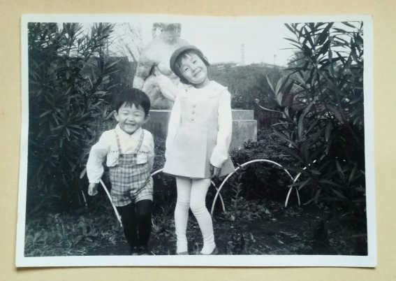
3 つ下の弟と
水色のジャンパースカートで
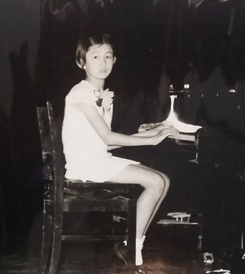
かぎ針編みのレースのワンピースに
ピンクのリボンフラワーのコサージュ
● ２ 「作る」にめざめて、東京へ
私が小学生の低学年の時、母は「えんどうフラワーデザイン教室」という看板を、家のフェンスに掛けました。
ですから、これがもうどうにもならなかったわけです。母の作ったものに囲まれ、おばあちゃんやらお姉さんやら、なにやら楽しそうに家に来るんです。
母は時々東京に行って、帰りに大きな紙袋を下げて帰ってきました。そしてまた、なんだか目新しいものをいじりだします。
母の使い残しながら、それは、私にとって、「命のもと」。この遊び道具で、私の手が動き始めました。布や紙や糸を形にしたり、わけのわからない液体で布を染めたり。
「手の中の自由」、それは「お友だちを作りなさい」と担任の先生から注意されるようなすこし冷めた小学生が見つけた、かわいい満足感でした。
作ったぬいぐるみ、編みぐるみは、子供ながらに子育てのような楽しさがあります。たいしたことない手提げも、作って、使って、大切なものになっていきます。
中学の時、デニム地をパッチワークにして学校の椅子の座布団を作りました。背もたれに掛けるのはシルバーのチェーン。紺色の制服には、ちょっと生意気。「かっこいいでしょ」みたいな気持ちが無きにしもあらず。
着古しのデニムに「手間」を掛ける（×）だけだけれど、なんだかプラスの感情が湧いてくる。「オリジナル」なんて言葉も知らなかったけれど、確かな満足感に出会った初々しい頃ですね。
一つ一つの自発的な経験が、心の栄養になってくる。背伸びもしながら大人になっていく。「ひよこ」ながら、すこし苦くも楽しい時期でした。
また、この頃は、放課後になると体育館でボールを追いかけ、時に校庭の一番外側をくるくる走っておりました。どちらかといえば、スポーツの方が得意。精神的にも身体的にも「私作り」の大切な時間でした。
197 0 年（昭 和 4 5 年、 私9 歳）創刊の 「 an a n 」、翌年に 「 non-n o 」。その数年後、その雑誌たちにも出会います。
このころ、街のファッションビルにかわいいプリント生地が並ぶ木綿屋さんやサンリオショップができました。地元で初めてピザを出す喫茶店のマスターは、アフロヘアー。そんな時代でした。
197 5 年、何しろ、家には教室用の別棟が建ち、母も勢いのあった頃でした。
高校でも、ボールをリングに入れるために学校に行っていたようなものでしたが、体育教員の道は縁が無かったようです。体育の他に美術・家庭科・音楽しか点数のない私は、何か作ることを自然と選んだか、選ばざるをえなかったか、数回行った原宿が頭を離れず、何とか東京に出たいと思いました。
その時、父は４７、母４４。はじめて子供を東京に出すのに、どんな気持ちでいたのでしょう。両親とも一人暮らしの経験はないし、親としても未熟だったでしょうに。
● ３ 仕事にしたけど、困惑期
新宿の高層ビルは、そのころま だ4 棟。代々木にある短大の２年生になって、飯田深雪先生のスタジオにも通います。その世界のパイオニア、「アートフラワー」という言葉も作った方で、当時、深雪先生７７歳。
花びらの形に、白生地を切って、染めて、こてを当て、「美しく」まとめていきます。
上京前、母に教わることもできたはずですが、母は「東京に行って習いなさい」と、それだけでした。
そこの初等科は、１年間びっしりのカリキュラムで、最終月には昇級審査の提出物。２年目は専門学校に通いながら、高等科で学びました。終了時の提出物は、予想通りの赤点再提出。
同時に、「コサージュメーカーに就職が決まりました」と担任の先生に報告したら、「あなたは、向いてない」と、ずばり。先生からのそのお言葉に「ごもっとも」と頭を下げるだけ。
この経験は、ありがたかった。今となっては、極上のスパイス。いろんな見方がある、いろんな人がいる、いろんな立場がある。めげるなんて、これっぽっちも無い。心で笑ってやりすごす。だって、次の扉が見えていたのですから。
入社前から独立宣言をするほどの生意気。入社時２１歳、社長３７歳です。
向いていないと言われて、ついた仕事は、コサージュ・デザイナー。
どんどん新しいものを作っていくので、レッスンのカリキュラムをこなすのとは、まったく異なる作業です。楽しくて、楽しくて、楽しくて、自由課題の制作も、遅くまで会社に残って作りました。
ただし、私は絵を描くのが苦手。絵が描けないのにデザインが起こせることを、デザイン画の講師もしていた社長に不思議がられました。できないよりはできた方が良いとしても、できることでなんとかする。デッサンの練習なんて、ちっとも考えませんでした。
大きい会社だったら、通用しなかったかもしれません。ただただ手で作ることしか頭になかったし、方法もなかった。メーカーとの打ち合わせも、紙に描かず、「作ったほうが早いので、次回お持ちします」 それで通ったのですから、有り難いことでした。
198 9 年（平成１年 ） 2 8 歳、仕事と私のやりたいことの違いに息苦しくなって、会社を辞めました。
そのあと１カ月間、ヨーロッパを旅したあと、世田谷に住居兼アトリエを構えました。コサージュ教室の生徒さんは、みんな で 4 0 人ほど。バス通りからすこし入った一軒家の小さな玄関に靴があふれていました。
199 1 秋冬・某ブランドのパリコレのドレスを飾るバラの花びらで、足の踏み場がなくなりました。また、舞台衣装や、歌手の衣装に着けるコサージュのオーダーも、時々入りました。
198 0 年代、私たち世代はスタートから上がる一方で、世田谷の小さな造花屋でさえ、アルバイトも雇い、また、地方から働きたいと声がかかるほどでした。
けれど、まさにこのあと、前代未聞のバブル崩壊で、アパレル業界では小さなマンションメーカーが次々となくなりました。
小さな造花のアトリエも、そこに居られなくなりました 。 3 6 歳、こんなに早くここを去るとは思いもしません。最後の日、引越しのトラックを送り出し、駅に向かいました。相変わらず、下北沢の街は賑やかでしたが、心の中にさえ、何の言葉も出てきませんでした。
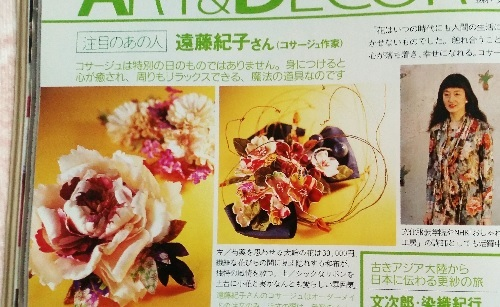
婦人画 報 199 9年8 月号雑誌掲載
● ４ 出会いとチャンスの出版期
精神的にも限界で、親元に帰っ て5 か月後 。 199 9年2 月 、 NH K 教育テレビ「おしゃれ工房」の出演依頼の電話が掛かってきました。
なんで帰ってくる前では無かったのでしょうか。そう思っても、どうにもなりません。
5 月の放送で「巻きバラ」を作りましたが、お陰様で高視聴率を取れ 、 200 1 年も出演させていただきました。
そのテキストを見たフリーの編集者から電話が来ます。
「コサージュの作り方の本を...」
そこから 、1 冊終わると次の本、それが終わると次の本、それが終わると... 運命なのか、神様の仕業か、この連続出版のシナリオは、ほんとうに絶妙なタイミングでした。
201 0 年、じゃこめてい出版からだした「遠藤紀子のコサージュ・ブック」は制作 に3 年掛かりました。この頃の手芸本では、考えられない厚みです。私が作ってきた、また生徒さんたちとの経験を活かして、失敗しやすいところのフォローもしてあります。これ以上は作れないと言い切れるほど、すべてを出し切りました。
東京での生活では、立て続けの出版なんて到底できません。「コサージュ・ブック」を出し終えるまで、出版に没頭できたのは、住む場所があり、親に食べさせてもらえたからです。
私が出した本は、「家族で出した本」、そう理解するまで時間もかかりましたけれど、この１２年は、「お陰様の出版期」です。
一つ一つの出会いは、一つ一つの出来事になり、つながって重なって、「花手芸作家」としての私も作られてきたのだと思います。目の前のことを懸命にやっていれば、次が「確か」にやってくる、そういう仕組みのようです。変化が起きないのは、まだそこでやり終えていないのだと、慌てないようにもなりました。
時間が戻りますが、コサージュ・デザイナー時代、「遠藤は、『できない』と言ったことがない」と社長に言われたことがあります。「やってみないとできるかできないかわからない」 チャンスと出会いを逃さないための、私のスタイルです。
そして、出会いを活かすために、相手が望んでいる以上の結果を出していくようにする 。 12 0 ％が到達点。人のためではありません、自分のためです。
ですから、「遠藤紀子のコサージュ・ブック」は、作品 を3 個作るところに、どれも外させないつもり で5 個作って持っていく。結果、ページ数が増えに増え 、 20 8 ページの分厚い本になりました。
自分で自分の仕事を増やすわけで、身体はゴチゴチでした。ですが、その出版パーティーで、父から褒め言葉をもらったのです。
「きれいなもんですよ」 子供の頃から何十年ぶりのことか。
201 0 年、東京から帰っ て 1 2 年 、 4 8 歳の夏のことです。
そして、 翌 201 1年3月 1 1 日の東日本大震災。それから間もなく、父に異変が起き始めました。
今度は、私が親を看る番となりました。実家に戻った理由を自分なりに明確にして、エネルギーに変えます。
介護。頭で分かるほど簡単ではありませんでした。
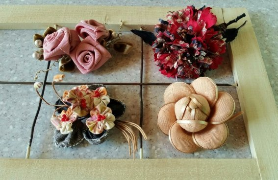
「遠藤紀子のコサージュ・ブック」からの掲載作品と
教室サンプル作品
● ５ 私なりの「花手芸作家」
201 6 年が明け 、 8 4 歳の父は脳腫瘍の手術か ら4 年経って、寝たきりの要介護４ 。 8 1 歳の母 は 1 0 分の散歩がきついという腰痛持ち。それと、私 の3 人暮らし。
そんなわけで、制作時間はもとより、美術館に行くとか、家で録画した映画まで観る時間さえ激減。去年あたりのスケジュール帳は、ページをめくれば病院と介護の打ち合わせがずらり。一時、母の入院までが数週間あったときは、自分の時間がまったく無くなりました。
親が元気なうちは「自分」と「仕事」を優先してきたので、この少しずつの状況の変化がきつかった。例えでなくて、ほんとに息が苦しくなるのです。
しかし、割り切るというというより、この時ばかりの優先順位は、「親」。
父が優しかったとか、可愛がってもらったとか、その記憶は、あまりありません。ですから介護といっても、自分の責任を果たす、その意識が支えでした。訳の分からない話が増え、注意することの無意味さもわかりながら、腹も立つしイライラもします。
しかし、負の感情は、自分を疲れさえますから、親という唯一無二の命に「ありがとう、ありがとう」と心の中で唱えるように切り替えます。
だれのためでもない自分のためです。
介護という苦めな経験も、ただ「正確に捉えて」、自分のことが何もできない焦りに、自分を落ち着かせようと思いました。
「正確に捉える」とは、「感謝すべきことを見落とさない」ということです。耳から入る自分の声の「ありがとう」の響きからでも、自分を感謝モードに持っていき、心をシンプルにして、淡々と目の前のことをこなします。目の前の経験にこそ、感謝なのです。
2 0 代 、 3 0 代にできたことが、できなくなりました。ネットを使いこなす若い作家さんのように、スピードもないし、たくさんも作れなくなりました。ましてや、この状況です。
だから、ここで実感します。「手芸は、競争ではない」と。私にとっての手芸こそ、私の支え。
そして、自分で決めたのです。この親を看ずに、「手芸作家」も無いものだと。
手のひらにのるほどの小さな花を作って、人と自分と、笑顔や学び、気づきを共有する仕事です。
思うようは行きません。大したものでもありません。得意なこともありますが、不得意も十分あります。センスが飛びぬけて良いわけでもありません。感覚的と言えば聞こえが良いですが、記憶力とは縁がありません。
それでも、ひらめくというか、時々神様がポンとデザイン画像を頭の中のスクリーンに見せてくれたり、次に何をすればよいかをここぞというタイミングで気づかせてくれたりするので、まだまだ前に行けそうです。
201 7年1 月、父が天寿を全うしました 。 8 5 歳になる手前でした。
私なりに私の目指すところに向けて、すこしゆるりとしながら、花作りを続けます。それは、私なりの真実、あるべき姿に向かっていくことです。
私と出会って良かったと言ってくださるだれかがいれば、私が先達から受けたバトンが、きっとその方につながると信じています。
「手芸は、人生を豊かにするもの」
まだまだ未熟ながら、それで も 5 5 歳、そろそろ私の真実の一部として「手芸力」を残したいのです。
２章 私の思う「作り方」で大切なこと
「作ること」は、起・承・転・結 のストーリー
【 起 】 作るときの心
● １ 好奇心 その入口はどこからでも、いつからでも
さあ、これから、私が作りだすとき大切と思うものを並べます。まずは、「好奇心」。
皆さんも、心惹かれるものに出会うと、ピンとくるか、ポンと鳴るか、そんな刺激が身体に響きますか。
そこで、情報を保存する、実物を見にいく、それともやってみる。見たい、行きたい、聞きたい、食べたい。その「好奇心」は、人を成長させる原動力です。
また、「なぜ？」という疑問、｢なに？｣という新たな出会い、発見や今までにない感動は、心の新陳代謝が上がって、その先を知る欲につながります。
この経験の積み重ねが心の豊かさであり、その感度が「元気力」ともいえるのではないでしょうか。
手芸もずいぶんと海外からの輸入物が増えました。しかしながら、時代は、和食、礼節、武士道などの日本文化に海外から光が当たっています。あらためて日本人の再注目、再認識が始まったようです。
私も 、 2 0 代から興味を持っていた「つまみ細工」をやっと手掛けることができました。
何とも繊細で、かわいらしくて、上品で。カジュアルなスタイルの中でも、小さなつまみのブローチが襟に咲くだけで和みます。
和の美しさは、「調和」。優しさの中に凛としたものがあり、華やかさの中にも落ち着きがあります。また、一つ宝物が増えました。
父は歴史好きでしたから、神社にちょっと寄っても、その背景にあるものをしゃべり出します。郷土の偉人である田中正造の全集も読んでいて、どのあたりに何が書いてあるか把握している人でした。
「歩こう会」というものを作り、日帰りハイキングを企画し、下見、引率と忙しく楽しんでいました。父の歴史話は、行く先々でペラペラ止まらなかったようです。その裏にある父の好奇心の強さと記憶力は、娘ながら、「それは、もらってきたかった」と思うほど。
ここ数年は、ベッドの上でじっと過ごす父でしたが、「人生は、楽しむもの」と、父の背中に教えてもらいました。
「あの頃の未来に僕らは立っている」のですが、あ と 2 0 年後の自分から見れば、今の自分がなんて若くて、物覚えも良くて、何を遠慮しているんだと思うはず。
親との同居、介護、それは、自分の時間が無くなって振り回された時間です。しかし、私は、少なくと も5 年間の介護を経て、命の儚さも時間の大切さも実感し、あ と 2 0 年 、 3 0 年を自分の作品作りのように、想いを込めて、形にして、気持ち豊かに生きたいと思うようになりました。
「そうだ、あれがやりたかったんだ。あれは、中断したままだ」 そんなところに立っています。
どんなものでも、どこからでも、心の太鼓が響いたら、その入り口に立っているはずです。始めるなら今。誰でも持っている好奇心、まだ見ていない景色に出かけてみてはいかがですか。
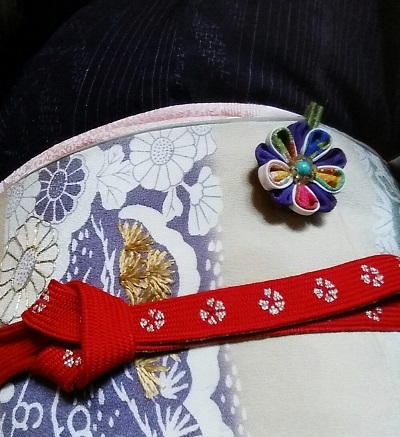
ターコイズを中心において、
古布をつまんで花びらに
● ２ 探究心 正解は無いので、自分で作るんです
「褒めて育てる」という方法が浸透してきました。褒められるとドーパミンという物質が出て心地よく感じるのだそうです。ドーパミンは、食事や運動から分泌を促しますが、「新しい発見や経験をする」、「好きなことに没頭する」というのも効果的な方法だそうです。
さらに質を上げるには、それを 深く掘り下げようとする意欲、さらに、自分の中に積み重ねをつくる「探究心」です。「おもしろがれる力」、「おもしろさを探す力」とも言っても良いでしょう。
私自身、映画や絵画で新しい作品が見たくなるのは、心のお腹が空いてくるという感覚です。「新しさ」はもちろん魅力がありますが、同じものを繰り返して観るのも意味があります。何年か経って、同じ作家の絵を見ると、感じ方が変わるからです。
この間、「マティスとルオー展」、といっても、「色のマティス」といわれるマティスを...と思って行ったら、すっかり、ルオーの色彩にやられてしまったのです。
「ルオーがわかるようになったのか～！（私なりにですけど）」こんな嬉しいを通り越した感情に、心が満たされたのは言うまでもありません。
一昨年からお習字を始めました。ともに何かしら手ごたえを感じようとする仲間と、墨の香りが漂う静かな時間に、穏やかな刺激を感じています。
私は型にはまるのが苦手で、決められた条件が窮屈だと気持ちがついて行かなくなることがあります。だからと言って、好き勝手にやってよいと言われても、目指すところがなければ気持ちは空回りしてしまいます。
そんなわがままな私ですが、書と花と一緒にしてメッセージを送れるような展示をしたいのです。決して上手に書こうとは思っていません。私の身体に、墨と筆が慣れてくれればよいのです。じっくり、付き合う？ いいえ、付き合い方は、ゆっくり。でも、深くなっていく感覚をしんみり味わっています。
私の教室の話しもしましょう。私の教室では、作者に似あう花を一緒に目指します。正解はありませんから、探りながら作るんです。私が想像するより、素敵なものや思いがけないものができることもあるのです。
基本的なことができて、そこから次を探る。ですから、同じ型を色違いや大きさを変えて 、2 個目 、3 個目と作ります。違いがわかるから、成長し深くなっていく様子が目に見えるんです。
その先にその人の心が踏み込むか、「おもしろがれる力」の問題です。
子供の頃の勉強を経て、そこから始まるその人ならではの学びが、どれだけ人生において意味があるか、体感するべきです。学校の勉強は正解がありますが、その後の学びには正解がありません。自分自身で答えを探るのです。
好奇心で入り口から入ったら、探究心でさらに前を見る。行ってみないと見えない世界、少なくともマイペース。自分の感性と対話する時間、その先にお宝あり。
人生とうに本番、物語は佳境。手芸も書道も、奥に何があるかわからない楽しい洞窟（？）です。集まる人たちも、学ぶ体質ですから、会話の通りもスムースですし。
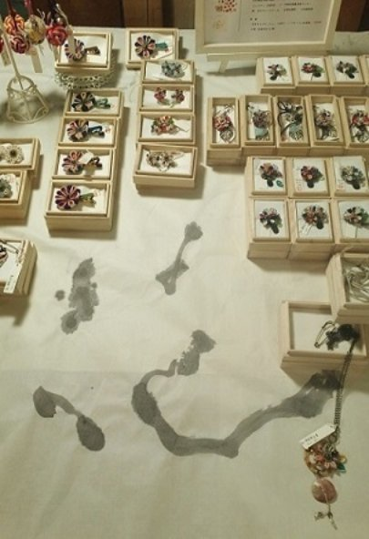
201 6 年アート街道６６展示会ブースにて
佐野・一乃館
● ３ 自己価値 自分と対話していますか
「日本人は検定好きらしいが、結局人生を質入れしたり、丸投げしているのだろう。自分で基準を作って、そのためにがんばれば、人生なんて毎日が検定だし、それについて他人にとやかく言われる必要はない。お仕着せの検定で得られるのは大勢迎合の安心感と、個性の喪失である。」
いきなりですが、これは、茂木健一郎さん の Twitte r から目に飛び込んできた言葉です。
同じような考えだったので、ここまでずばり言われると、私の曖昧なものも整理したくなりました。
自分を成長させようとするなら、客観性や自己の判断軸が必要です。もちろんそれが○○検定のような社会に流通する判断軸という場合もあるでしょう。段階的に学んでいき、それを一つのポジションにするのは分かりやすい仕組みです。教師や医師や弁護士などは、一定の水準を資格として明確にする必要があります。
私は、ハンドメイド、クラフトあたりの○○資格、○○検定などのシステムに何か自由な印象を持てなくて、「○○ができる」というレベルの認識とともに、「はみ出さないで」という感じも受けるのです。
ですから、基礎的なテクニックをシステムの中で習得しても、その先で自分と対話をしながら作るというスタイルなら、「自分というレベル」の作品だと思います。
ですが、受け入れた技術の中だけで、冒険をせず失敗しないようにするだけでは、悩みレベルがシンプルなので、意外なアイデアをひねり出したり、壁に当たったりする苦い経験をしづらいのです。
自分で選んで、考えて、失敗ながら工夫する。多面的に捉え、積極的に心を構えて質の高い充実感を得られるようにする。そのためには、コントロール力のある柔軟性、チャレンジ精神が原動力なのです。
価値というものは、比較したうえで理解できるもの。技術的な上下の軸があれば、横軸に発想の幅が見えてくるはずです。技術的に簡単だと安っぽいものになりがちと思うかもしれませんが、簡単に作れてデザインの良いものこそ、単純化のセンスが要るのです。
もちろん手間を掛けた作品は、かけがえのない宝物。
目的を明確にすれば、アイデアはぽっと浮かぶもの。考えを自由にして、イメージを広げる感覚を大切にしてみてはいかがでしょう。
作りながら、アイデア、テクニックが作り手の意思として織り込まれていきます。まっすぐな道のりでないところがおもしろいのです。考えが行き来し、バランスを崩したりしながら、自分のスタイルができてくるものです。
初めて見るものに感動して、それを一度自分の中にインプットし、今までの私の感覚と掛け合わせてアウトプットしたものは、自分なりの加工品です。
花作りは、あくまで自分軸。分身と言い換えられるほどに、私の心と感覚がそこにあるだけなのです。とはいえ、どれだけたくさんのことを学ばせていただいて今があるかも、できるだけ正確に心で理解したいと思っています。
今日までの私の花作りの中に、どれだけ先人たちの培った技のお蔭があって、自分の宝物を作れたことをいかに実感するか、そして、そのお蔭を次の世代に渡せるか、それが感謝の形なのです。これから、私が身につけたものを喜んで受けるどなたかに伝えること、それも私の幸せとして、価値あることだと思うのです。
● ４ 温故知新 過去に生きた先人たちとつながる
この年になると、「若いときは・・・」と振り返り、「おばさん」と呼ばれてもそれがあたりまえ。
「若さ」は時間とともに変化して、「青さ」ともいう未熟期となって自分の過去に生きています。重ねた時間に愛着もあって、少し恥ずかしい時間もすんなり受け入れられるようになりました。
同世代が集まると、「昔の洗濯機の脱水はローラーの間を通すのだった！」と、古さを自慢するかのように盛り上がります。全く別の所で暮らしていても、身の回りの生活品や見ていたテレビ番組に同じような影響を受けています。時間を共有したことは文化や価値観の共有でもあって、時間をかえりみた「古い」という言葉も、なつかしさと共に温かいつながりを感じるものです。
ですから「古さ」の意味合いは、価値の無くなったものではないとお分かりでしょう。 その時点では技術的に最新、アイデアは画期的で、その時代のニーズに向き合っています。いつ、どこで、どんな人たちが、何のためにと時代背景を推測すると、物であっても、人と人の間を行き来した一つの命のようにも感じてきます。
ましてや、機械生産以前の手工芸品や、美術・芸術品は、人の手の感覚や想いがそのまま形になっています。権力の象徴に作られた品々の今に伝えきれなかった技術など、意識の高さと情熱は、想像がつかないほどです。
造花の歴史は、紀元 前 270 0 年ごろ、地中海で栄えたエーゲ海文化の遺品のなかにみられる造花が最古のものとされているようですが、花を飾る歴史は、人類の歴史と共にあったことでしょう。
現在、私たちがコサージュと呼ぶ造花は、中世のイタリアが発祥の地。イタリアが保持していた技術がフランスに伝わり 、 1 7 世紀には造花製造業として安定します。
1 8 世紀には貴族のドレスを、甘く繊細に、そして豊富に飾りました。さらに貴婦人たちの間でも趣味的手芸として広まり、マリー・アントワネットも師について自ら制作していたそうです。
２０世紀には女性のドレスのコルセットがはずれ、シャネルがさらに解放したように、アクセサリーも一般して、コサージュも帽子と共に普及していきます。
「流行は色褪せるけど、スタイルだけは不変なの。」
シャネルのカメリアのコサージュは、彼女の言葉通り、そのスタイルのまま咲き続けています。
デザイン、技術、そして、時代への適応、美に対する情熱。さまざまなエネルギーに支えられたコサージュ。荒波の時代を潜り抜け、今に継承されたと再認識するだけで、上品で、贅沢なイメージの中に、躍動感まで感じられるのです。
「故（ふる）きを温（たず）ねて新しきを知る」
どんな分野でも歴史があります。その時間が途切れることなく今に続いていると思うと、歴史は本の中のことではありません。
目の前の時間も、その延長上かと思うと、過去は私に何を説いているかと、考えたくなります。
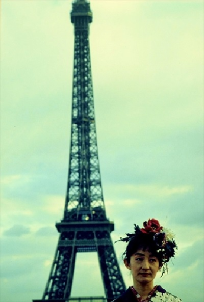
199 3 パリ
エッフェル塔を背に
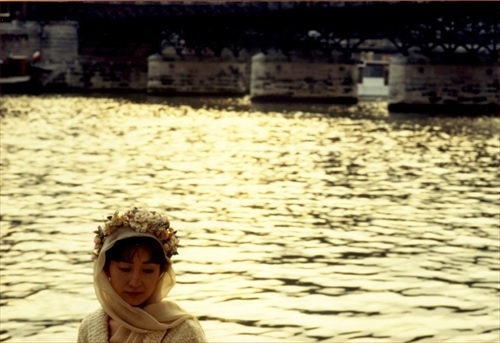
199 3 パリ
セーヌ川のほとり
【 承 】 作り方のコツ
● １ 基礎という靴をはいて出かける
靴を履かなければ、外に出られない。それくらい「基礎という靴」は不可欠です。
もし、あなたが何かの世界に本気で飛び込みたいと思うとき、「基礎の上に自分の意思を乗せられる自由がある」ことを頭におきましょう。基礎への考え方も変わると思います。
手芸は、花道、茶道のように「道」の世界ではありません。自由に表現できる世界ですが、「自由」をより活用するには、焦らずに基礎からしっかり学んでいくべきです。
基礎的な知識や技術はレベルが低いことではなく、制作に必要な知恵や工夫が淘汰されたものです。そして、その基礎を応用して、次の段階に「展開」していきます。美しさ、心地よさ、意外性、不思議、驚き、そこに個性が乗るのです。
何年か前、数人の作家さんで出す共著本、そのコサージュの撮影に立ち会った時のこと。易しく作れそうなあどけない花たちがスタジオに並んでいました。
しかし、その花たちを手に取ってみると、胸にフィットしない、下を向いてしまう、重すぎるなどコサージュとして厳しいものがいくつかあって、言葉が出なくなってしまいました。正直、これを載せると判断した編集スタッフにも、なんと切り出して良いのかわからなくなりました。
コサージュ表面側のデザインは、それこそ自由です。しかし、コサージュの基本、「胸にぴたっとつく」という造りになっていないものを、読者が作った時にどんな反応をするか。
私の生徒さんには、裏の始末、ピンのつけ方をしっかり伝えています。裏のピンの処理は、技術の見せ所。ですから、私の生徒たちは、売っているコサージュを手に取れば、持った途端に手首を返します。それくらい大事なチェックポイントなのです。
結局、そのまま本は出版されましたが、側面や裏面を提示できないのは、とても残念でした。
「つけたときにどうなるか」、油断は禁物。ここは理屈で覚えるところ。つけ方、つける位置ももちろん、飾られた時のバランス判断が必要です。
きちんと基礎の靴が履けたら、自由に動ける。応用するおもしろさは、そこから自分の意思で目的地を決められること。 材料やデザインを変えたくなるし、デザインの参考にするものさえ、身近な物から意外なものまで幅が出てきます。
この流れの速い時代に、「基礎をじっくり」というのは、どんな響きに聞こえるでしょうか。過ぎてしまえば 、3 年 、5 年はあっという間です。
長く続いた生徒さんは、技術の成長はもちろんのこと、良くなかった理由もはっきりわかるようになります。改善点を指摘すれば、その理解度も核心に近づいていきます。
基礎は、レベルの低いことではありません。
向いてないとか、不器用だとか、そんなセリフを使うところじゃありません。ここは、たんたんとやるだけです。おもしろさ、楽しさに出会うための靴をはいているところです。
● ２ リズムを感じてみよう
「リズム」という言葉は、音楽や運動はもちろん、会話など言葉のリズム、また生活のリズムとして、その調子や時間的な動き方を表すのに使われています。
音楽でも、アレンジを変えると曲の雰囲気が変わります。その空気感、そのリズムで心を動かされれば涙も出てくるのですから、なんとも不思議な力です。
私 が1 輪の花作るとき、またたくさんの花をまとめるときにも、色、形、素材のリズムを意識しながら仕上げています。
色には強弱がありますから、流れを作ったり、ポイントを作ったりして、花の見せ方をコントロールできます。また組み合わせの色によって見え方が変わってもきます。
形といっても、花び ら1 枚の形から全体の形までありますが、バラの花びらを組んでいくとき、それぞれの花びらの「間」の取り方で、開いていく表情が単調にもなり、また動きを作ることもできます。
素材にも力関係があります。使う分量や質感、その素材の色によって関係性が変わってきます。
何が主人公で何が脇役でというような「物を引き立てる」という感覚が分かると、躍動感をコントロールしてドラマが作り出せます。
葉っぱが花より目立っていては、主役を負かしてしまいます。葉の色自体が良い色かということより、「どんな色がよいかは、花に聞いてみて」となり、その場面での調子を合わせていくのです。
日本の文化は「間」の文化と言われています。
昔は広いお座敷を「間」で区切って、そこの空間を一間としました。茶の間、居間、客間、床の間と、そこの場所の用途も表します。畳の大きさも東と西とでは異なり、中京間 （ 182c m× 91 c m ）、江戸間 （ 176c m× 88 c m ）、京間 （ 191c m× 95.5 c m ）などがあります。
日本画は、余白の空間に見る人の感性が入り込み、創造する風景を心の中に描くことができます。そこに描かれているものの存在自体を、どう引き立てているか、どう扱っているかということも読み解けます。
絵羽模様の訪問着（背・脇・ 衽( おく み) ・襟などにも模様が続くように染めたもの）は、穏やかな風の流れを感じる風景画をまとうようです。また、意味合いを込めた青海波、亀甲、鮫小紋など、和柄の幾何学模様には、格式を感じます。
日本人は、空気の間（空間）と時の間（時間）の使い方で、人の感性を動かす術を心得ていたのです。
特に、人や自然を愛する心、それらと共に暮らしてきたことへの感謝を、「間」という手立てを使って表現し、物事の真実に向き合ってきたのだと思います。
「間」という字は、門の間から月の光が射している様子だそうです。それくらい間というものは美しさを持ち合わせ、日本人はその感覚を生活の尺度にして暮らしてきたのです。
日本にいるなら、また日本にいなくても、先人たちの作り上げた空間と時間の美しさを探してみてはいかがでしょうか。
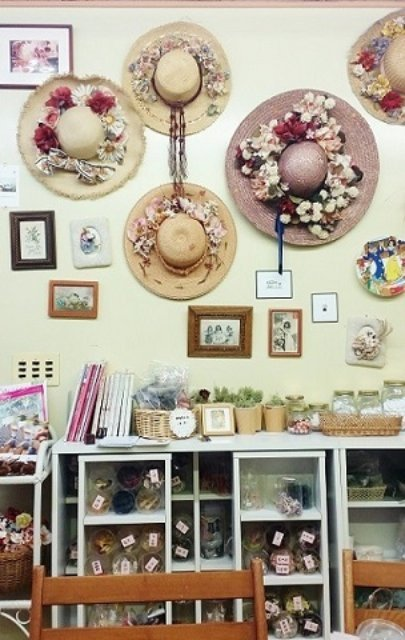
● ３ 海外から評価される日本の魅力を学ぶ
｢間｣の話しが出たところで、もう少し、日本の美について続けたいと思います。
日本の美が海外に評価されたのは、今に始まったことではありません。江戸時代末期、西洋商船の押し寄せが黒船来航に始まり、持ち込まれたカメラと印刷技術によって日本の様子が西洋に知られるようになります。
美術品の中でも、特に葛飾北斎や歌川広重らの浮世絵版画は関心を持たれました。日本についての書籍、ま た 1 9 世紀、ロンドンやパリで開催された国際万博における日本文化の紹介によって、いわゆる「ジャポニスム」（日本趣味）と呼ばれる日本美術愛好熱が広がっていきました。
多色刷りの印刷物、庶民の生活や女性のブロマイド的なものが珍しかったこと。絵画的には、左右非対称、余白を活かす構図。平面的でありながら、おもしろい視点からの大胆な構図。さらに、その平面的描写によって画面を単純化することで、色の持つニュアンスを明確に伝えています。
当時、写実的な表現をしていた西洋絵画には存在しないもので、魅力を感じたものをクローズアップし、それをまたユニークとも洒落ともいえる捉え方で表現しています。
ジャポニスムの特徴は、日本美術が収集されただけでなく、マネ、ロートレック、ドガ、ルノアール、クリムトなど、画家たちの作風に多大な影響を与えたことです。
中でも、ゴッホは、貧しい生活の中でも弟テオと浮世 絵 45 0 点以上を集め、広重の模写も行い、筆の運びや色彩感覚を自身に当てはめています。
浮世絵が画中画（絵の中に描かれている絵）として登場する作品の中でも、『タンギー爺さん』 （ 188 7 ）の背景には広重、豊国らの絵が数枚あって、日本との距離と時間の境を飛び越えてしまう温かい存在です。
モネもまた、浮世絵収集 は 20 0 点以上に及び、借金生活の中でも、自身の絵と浮世絵を交換していたそうです。蓮の花が咲き乱れる自宅の庭に日本風庭園までも作って、日本人の来客を歓迎していたというのですから。
背後にさまざまな団扇（うちわ）を飾り、扇を手に朱色の歌舞伎の着物を着た妻カミーユ・ドンシューを描いた『ラ・ジャポネーズ』 （ 187 6 ）は、鮮やかな色彩に彩られ、日本に魅かれる画家の高揚が感じられるようです。
ジャポニスムをさらにさかのぼると、平安時代には「かさねの色目」という、色を季節ごとに味わう文化がありました。それぞれの色合わせに植物や自然現象から取った名前がついています。そ の 40 0 数種類の色自体にも固有の名前がついているのですから、日々の暮らしへの関心が伺えます。
季節の色を大切にする心、その色をまとう贅沢、平安貴族の自然の恵みに対する感度の良さは、色の持つエネルギーをも理解していたからではないでしょうか。
海を渡った途端、西洋人を魅了した日本の美意識。それと直に接してきた祖先たちの血が私たちにも流れています。
私たちは、電子画面の色に接する時間が増えました。それを減らすこともしづらいけれど、目に映る物そのものの色を意識して、身近な暮らしを素敵な彩になるようにつとめたいものです。
着物の虫干しもしばらくやっていません。寒干しの時期は過ぎてしまいました。今年の夏、土用干しを心において。
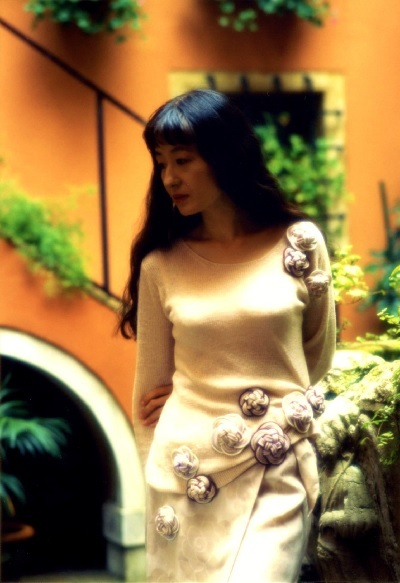
199 5 ベネチアにて
飾り結びのブローチ
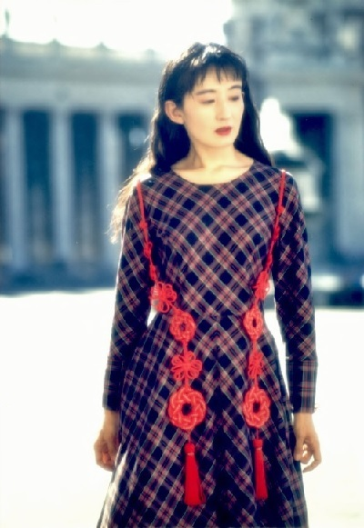
199 5 バチカン宮殿にて
飾り結びを下げて
● ４ センス磨きは自ら学び、自ら動く
「センス」の意味は、感覚、気持ち、感性、意識、判断能力、良識とまで出てきます。基準の分かりづらいものですが、確かにセンスがいいとなれば、スマートな感覚を表現しています。
ファッションなら「おしゃれ」ということですが、高級なもの、流行りものばかりを着ているのがおしゃれではありません。「似あう」とか「その人らしさ」が魅力のかなめです。
そうかといって、私がおしゃれで、ゆとりがあって、ナチュラルでと、雑誌に出てくるような暮らしぶりをしているわけではありません。
一段落した介護 も 8 2 歳の母との暮らしがスタートし、まだまだなんやかんやで片付けることが山積み。「無理をしないという選択」も、今の私に大事なセンスです。
話し方や行動のセンスもあって、そこには「心のあり方」が伴ってきます。人の気持ちがわかるとか、自分の立場がわかるとか 、 TP O に合った選択ができる、気遣いができることもセンスがよいということです。
一見、自己主張が仕事みたいな○○作家という仕事。とがった気質も個性でしょうが、それもいずれ若さと気づきます。私もほんとに生意気でしたから、心のあり方は、もちろん、ずっと、勉強中です。
センスというと持って生まれた感覚のように思われています。運動能力はその割合が多いかもしれませんが、結局は何を選択するかでセンスの良し悪しが決まるとするなら、選択肢の豊かさがベースになります。
知識や情報がベースにあって、そのうえでどこを選ぶか、どう振る舞うか。それが難しいと言えばそうなのですが、一つ一つの物事を丁寧に扱うよう心がければ、その成果も現れるはずです。
時々は、広い本屋さんでいつもの場所だけでなく、ぐるっと回ってみる。美術館も見たいものだけでなく、見ておくべきものをチェックする。そして、そこで何か心地よいものに出会ったら、なぜそれが心地良かったか、その「理由」を探す。この意識がセンス磨きの材料です。
知識は広げることも大切ですが、深めることで自分軸＝自分の基準がしっかりしてきます。 自分の「好き」や「楽しい」を掛け合わせて、自分の感覚を具体化する。すなわち外から学ぶのとは真逆で、自分から表現する作業です。日常に自分らしいスタイルを作ることで、自信やゆとりになるのです。
この歳になると 、 3 0 代 、 4 0 代に好んでいたものにも違和感を覚え、より丁寧だったり、落ち着きを求めたりします。増やすばかりではなく、逆にシンプルな方がよくなって、物も考え方も捨てたり、割り切ったりと整理する部分もあります。
また、大人になるというのは、子供心をなくすことではありません。素直で、純粋な感性も魅力の一つ。多面性や意外性は、魅力の幅になってきます。
かわいい手芸は、たとえ小さなものでも、その人をその人らしくする価値あるアイテムです。作品のデザインセンスも、気持ちのセンスも磨かれる、それが「手芸力」です。
身近にいる素敵な方の、色の配色をまねてみる。年の初めの新年会は、春色の小紋で。父のＴシャツを細く糸にして、鍋敷きでも編んでみる。
突然明日から違う誰かになれるわけではありません。ちょっとした事の、行動チェンジを楽しんでみては。
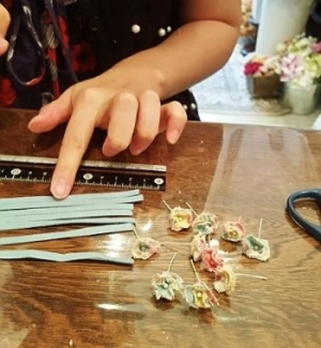
教室の生徒さんの手と小花
● ５ 自分を愛するために、好きなことをやる
コサージュを作るとき、花のデザインに困っても、雑誌、本、今だとネットとか、いろんなところに材料は転がっていますから、デザインのネタを探すのは難しいことではありません。
敷居を低くしてたくさんデザイン要 素( アイデ ア) を頂いて、ひねったり、膨らましたり、自分なりの工夫をする。自分から出すときは磨いて磨いて「唯一無二」をめざす。
「自分」という加工機材を使うのです。あえて高いところを狙って、自分さえ想像できなかった作品にチャレンジする方が、さらに加工能力も上がります。
花びら切って、染めて、こてあて。お花にまとめて、ピンをつけてと、ちょこっとの花飾りの割に工程の多いコサージュ。実は、作業自体より、何を作るか決まるまでが大変ですが、それを超えて完成まで行き着けば、その瞬間、自分の新しい分身に出会うことができるのです。
自分にこだわって、自分自身に向き合って、自分が大好きで。だから、「好きなこと」をやってきました。
冒険、努力、失敗、生みの苦しみ、それを一つずつ重ね、自分がにこっとするため、感動するために作る。その感動が、自分の中に、自分の幹を、自分の軸を育てていくのです。 自分が好きなことをやるというのが、自分らしく生きるということです。
ジェッソ（白下地の画材）を赤い花びらに塗って、白椿を作ったときのこと。その白の下から赤い生地の色が透けて、うっすらピンクの花びらがおすましして並びました。
眺めながら、白ワインが半分ほど空きましたっけ。
自分を作っていくというのは、自分にどんな可能性があるか追求していくことです。そして、自分を磨き、活かし、自分を大切にすること、無駄にしないことでもあります。
水木しげるさんの言葉には、「好きな道だから」と、何度も出てきます。
「好きなことにのめり込み、才能が開花してどんどん伸びたとする。でも、食べていくのは大変だ。なかなか儲かるもんじゃない。（中略）だからといって、絶望したり、悲観したり、愚痴をこぼしてはいけない。ただただ、努力するのです。なにしろ、好きな道なんだから。」
自分を愛するために、好きな道を選ぶ。私の場合、これしかやらずに来られたというのが、好きな道である証拠でしょう。好きな道は、自分作りの、自分磨きの道なのです。
好きなことをやるって、思いのほか簡単そうで、むずかしいでしょうか？
いやいや、やったもん勝ちです！
白椿、型 紙 1 0 段階で 各1 枚。このおもしろさ、お分かりいただければ、うれしい限りです。
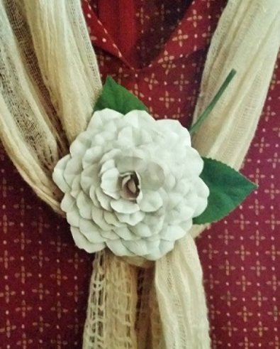
ジェッソの白椿
【 転 】 ここが物語の山場
● １ 失敗の捉え方
失敗と言えば、エジソン。エジソンは失敗の代名詞。いえいえ、失敗を失敗にしなかった代名詞です。
私たちは、彼の発明の恩恵にあずかっていますが、彼の人生哲学も同様に価値があります。
「私たちの最大の弱点は諦めることにある。成功するのに最も確実な方法は、常にもう一回だけ試してみることだ。」
七転八起、さらに九転十起。先人たちは、転ぶことをダメなことだと捉えていません。失敗は、転ぶことではなく、起き上がるのをやめること。転んでも転んでも立ち上がり、挑戦していく姿勢を説いています。
物作りや習い事で、思うようにいかないとちょっと焦ります。すぐに答えを求めたり、すぐに上手になると思ったり、隣の方が早かったりすると、「なんでできないの」とか「むずかしい」とか、そんなセリフが出てきます。
目の前の講師は、スムースに手を動かすので、とても簡単そうに思うでしょう。同じようにはいかない現実が待っていますけど、慌てることはありません。
「先生のようにうまくいかない」と言われますが、「そんなことないわ」と歯の浮くようなことは言えません。レッスンは、みんな仲良しという会ではないのです。苦味や辛味も、おもしろさにつなげていきます。
一つ一つの工程を本気で理解しようとするならば、「できない」なんてセリフをいう時間さえないことが分かります。その一つ一つの階段に、場面場面のおもしろさが隠れているのです。真剣に集中すれば、大抵、人はだまるものです。
不器用な方ではないと思っている私も、お習字の課題は、すぐにどころか全然できない有り様です。
でも、シュンとしている場合ではありません。たんたんと書いて、そのうちにちょっとつかめたかな、コントロールできるかなと思い始めたら、またたんたんと書いて試していくんです。
私は、「むずかしい」などとは、ほどほどやったと思えるところまでやって、やっと口にできるものだと思っています。すぐにできないと、向いていないとか、むずかしいとか言うのは、自分をその道にどっぷりのせる構えが薄いのです。
何かの習い事をガッチリ習得したいなら、だまって１年はやるつもりで始めると良いと思います。
価値のあるものなら、奥が深いものなら、そんなに簡単にできるはずがないのです。基礎の話しもしましたが、応用はその上の話し。さらに身につくというのは繰り返しの結果、習慣になってのことなのです。
うまくできないからといって、ダメということではないし、くよくよしても始まりません。だからと言って、考えの無い繰り返しをしても進歩しません。まずかったと気づけば、次に注意するだけです。
かわいい手芸くらいは、前向きな繰り返しで、手と目が覚えていきます。失敗がバリエーションの幅にもつながるし、転んで起き上がり方を学ぶのです。ただでは起きない欲深になりましょう。
失敗は成功への途中、経験はすべてプラス、長いスパンで考えましょう。
● ２ 大回りして、いろんな場面に出会いましょう
仕事が丁寧であるというのは大切ですが、慎重になりすぎて仕事を余計に増やしている場合もあります。ですが、いろんな状況を経験するうちに、無駄を省いたり、作業順序を変えると効率が良いことに気づいたりします。
「いろんな場面を経験する」、それは学びになります。
私の花手芸でも材料は布と決まったわけではありません。ホームセンターに行って、金属や木材、農業用のネットもピンとくれば仲間入り。生地探しだって、手芸店より古着屋さんや古裂をさがしに骨董市へと出かけます。
「いろんな素材に出会う」、それが幅になります。
ちょっと外に出てみましょう。行ったことのないところに行きましょう。少し行動を変えるだけで、意識が変わります。意識を変えるのではなく、行動を変えるのです。
いろんなものを食べると、美味しさのレベルも上がり、いろんな所に行けば、風景の違いがおもしろく感じます。感度が上がれば、普通の中にある物事にも、おもしろさを感じることができます。
野菜の新芽が甘いのに心がキュンと動くし、自分好みの手作りのドレッシングで、にこっと始まる朝になります。
「おもしろがれる力」が強くなる、足元のおもしろさに気づく、それが、感性が豊かになっていくということです。
最近思うのです、花作りばっかりやってきたけど、それでいいのかなって。小さい頃に習ったピアノやお茶、４０過ぎて７年習った歌。なにか自分の中に、うずうずしているものがあります。
しんみりした話になってしまいますが、父の死を経験して、「私の生き方」を考える機会になりました。
花作りに没頭する人生も、決して悪くはありません。心がそう望むならそれもありでしょう。花作りは、私にとって社会とつながるツールであり、私を私でいさせてくれる大事な物です。
花作りは、ライフワーク。でも、まだ扉のあかない私の中の可能性、さらに途中で締めた扉も改めて探ってみたいのです。
父の第２の人生の幕が開けたのは、今の私 に3 つ 、4 つ足した歳でした。会社勤めが終わった後の人生は、人が変わったように楽しそうでした。
今、この瞬間に立って、これからの時間が「残された時間」というような見かたに変化してきたのです。より、時間の貴重さを感じるのは、体力の衰えも知らん顔とはいかなくなってきたからです。
昔引いたピアノ、ギター、まだまだ知らないことや知らないところ、大回りしてさまざまな場面をこの目で見てみたくなってきました。たがが外れたわけではありません。
そしてまた、それが私の花作りの見方を変え、価値を変え、作る心得を変えるのかもしれないと思うのです。
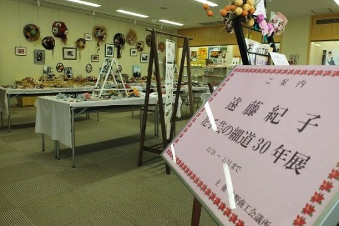
201 3 佐野商工会議所
花手芸の細 道 3 0 年展
● ３ 壁に当たれば、そこは曲がれ
お腹がいっぱいになっても、デザートは別腹。ものが変われば、不思議と気分も変わります。
私は、アートフラワーという染めの布花から始まって、服地を加工したり、ペップ（花芯の材料）、リボン、ワイヤー、革なども材料にして花モチーフのアクセサリーを作ってきました。
また、飾り結び、つまみ細工の日本の伝統にも興味があります。良いとこ取りをして、私なりのアレンジ作品も作ってきました。
一つの道をまっすぐ進むというならば、当たる壁は乗り越えなければなりません。
ですが、気持ちの向くまま、自己都合。伝統芸でも、道の世界でもありません。花手芸という大雑把なくくりにして、「私作り」を探求しているのです。
触りたい材料をつかみ、それをどうするべきか想像し、そこに向かって形にしていきます。そして、作りに作って満腹状態になると、ま た0 からの新鮮な感覚がほしくなってしまうのです。目先が変わり新しい材料を触れば、そこは別腹、身体ごと軽々と動き出します。
繰り返しの鍛錬は大事な学び方ですが、慣れてくれば飽きてもきます。一つのステップの完了と捉え、そこを「曲がって」別の風景に切り替えます。作風の変化こそ「成長」。色や形の感覚は年齢によっても変わってきます。技術的なことも上達しながら、それとは逆に若い時にはできたことができなくなったりします。
しかし、それを衰えとせず、年を重ねた感覚の冴えを使って、新しさへと展開するのがおもしろいのです。
こんなこともありました。世界的な大事件によって、曲がることのできた経験です。
2 0 代後半か ら 3 0 代は、フランス、中国、イタリアと海外での作品撮影を重ねてきました。そ の 199 0 年代は、作品を入れた箱をいくつか重ねて風呂敷に包み、機内に持ち込んでから、当時の言い方でいうところのスチュワーデスさんに「お願いします」と手渡しで預かってもらえました。今思えばとても信じられない、何とものんきな話ですね。
その後 、 200 1年9月 1 1 日、アメリカ同時多発テロ事件。
手荷物は厳重な規制が掛かり 、 200 4 年のペルーでの撮影では、荷物を何が何でもスーツケースに押し込まなければならず、「畳んでつぶせる作品だ」と気が付きました。
立体から平面への発見は、宝を見つけたごとく。そこから無我夢中の時間が始まりました。引出しの中に眠っていたリボンやコード、半端な材料も活躍してくれました。難しい技法ではなく、材料自身の良さを生かした作品は、ペルーの青の深い空に映えました。
9． 1 1 で起こった障害も、思いがけず新作作りのきっかけとなりました。平面的な作品は、タペストリー風のものが多く、展示会などでは、空間を飾るのに役立っています。
「ピンチはチャンス」と言われても、簡単にひっくり返せるかと思うこともあります。でも、 慌てずに考えてみれば、自分の思い通りにならなかっただけで、悪い方向に行ったとは限りません。予定外の状況になったから、考えもしなかった選択をすることになる場合もあります。
壁に当たれば、重い気持ちになりますが、あわてず、こだわらず、そこから曲がれば良いのです。
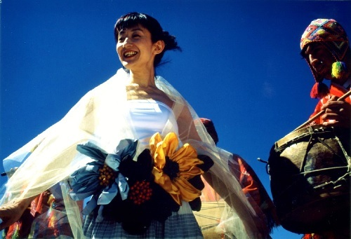
200 4 ペルー
パリで買ったアンティークリボンを花にして
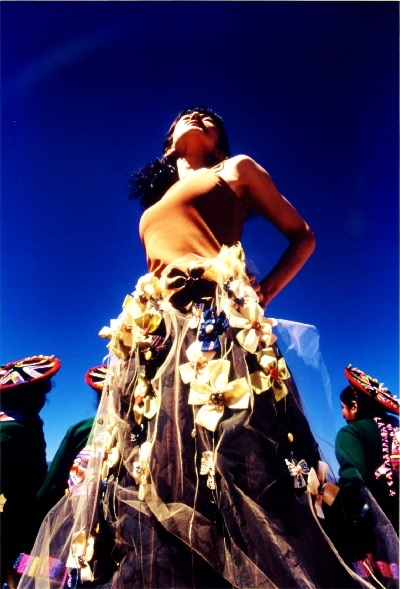
200 4 ペルー
4 枚リボンのタペストリーを巻いて
● ４ ひらめくとき、それは偶然ではありません
物作りの人間なら、意識の中に画像が見えたり、音が聞こえたり、ふとした瞬間に「これだ！」と思うことがあるはずです。神様からの贈り物ともいうし、ひらめきとも。
ひらめくときにドーパミン（快楽ホルモン）が出る。ドーパミンが出るときにひらめく。そのどちらからしいのですが、どちらにしても心のつながりとも関係がありそうです。
私の経験では、何も考えていないとき、お風呂、眠りかけといったリラックス状態におこりがち。リラックス状態があるということは、活動状態とのメリハリ習慣が効果的ということでしょう。
私のひらめきの中で一番印象深いのは、ピンクの細長いフランスペップが八方に広がって花の形を作っている画像が頭の中のスクリーンに見えたときのこと。
ペップは花芯になる材料ですが、それを花びらにしたものが若草の芝生の上、ベンチのような木片の上に映っていました。
その一瞬で、その仲間が私の手から展開されることが理解できました。イヤリング、ブローチ、ネックレスのパーツ。私は、一気に作り出し、著書「ペップの花アクセサリー」の出版までつながるのです。
「ひらめきは、それを得ようと準備、苦心した者に与えられる。」（パスツール 、 1 9 世紀フランスの生化学者・細菌学者）
私に陶芸の技術や、フランス料理のソースの作り方がひらめくことはありません。ひらめきを生むために、その手前の段階が必要です。私が花作りについて、できるところまでは学習し、準備をしなければなりません。求める状態がそろって、そこにひらめきが起きるのです。
脳のコンピューターがはじきだすのか、神様がくれるものか、どちらでも良いのですが、どちらにしても、前向きな姿勢が必要です。
コサージュの作り方の本では、作品のバリエーションが必要です。さんざん慣れた材料で新たな使い方を模索しているとき、ある瞬間、突然、自分でも驚くような画期的な使い方に気づく時があります。
コサージュを楽しんでもらいたい、おもしろいものと分かってほしい。私はそう思ってコサージュの本を作ってきました。その気持ちがあって、神様がくれるのだと思うのです。
ひらめくためには、ひらめいたことを人の役に使う、人の喜ぶことに使うという考えでいるべきです。 エネルギーは循環していますから、「出せば入る」と分かったなら、どんどん出せはいいのです。
自分が考えたような顔をして著作に掲載していますが、私の持っている技術は、先人たちの創造の結果を受け、学ばせていただいた結果なのです。
ですから、エネルギーを渡すのです、分けるのです。感謝があれば、簡単です。ご縁のあった花作り、自分をここまでにした花作りの楽しみを伝えることが感謝の形として心にあるのです。
ひらめきは、偶然ではありません。来るべき時、来るべき場所に来るのです。一つの種から大きな花が咲くように、ひとつのひらめきが、世の中を変えることもあるのです。
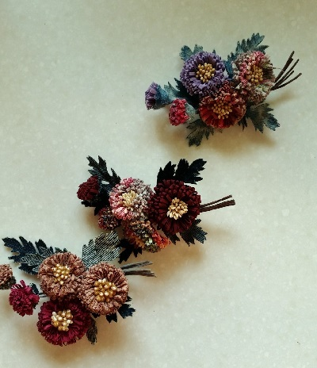
画像がポンと見えた
ひらめきの一つ
デージーのコサージュ
【 結 】 手作りの実り
● １ 「簡単かも」と考えれば、可能性が広がる
コサージュ教室に見学の方がいらっしゃると、「つまらなくて、だまっているんじゃないのよ。」と、少し笑いを取るのが恒例となってしまいました。
夢中になって物を作ると、ほんとにしゃべらなくなって、音のないリズムの中で作り手の気持ちが盛り上がっていきます。音楽を聴きながら作業もしますが、真剣に集中すると、ラジオの音さえじゃまになります。
「夢中になる時間、ありますか。」
今、私たちは、物質的に恵まれた中にいます。欲しい本はパソコンの中で探せて、おしゃれな服もリーズナブルなものもたくさんの中から選べ、輸入食材店も珍しくなくなり、海外の味も楽しめるようになるようになりました。でも、それも慣れてくると、何か心が物足らず、手ごたえのない時間が過ぎていくように感じます。
だれでも自分らしくありたいと思う気持ちがあります。ネットで買うものを厳選して、何かかっこがつけばそれなりのオンリーワンかもしれません。ですが、そもそも、何もしなくてもオンリーワンなのです。
大切なのは、無理のない目標をもって、自分の存在・オンリーワンを極めることです。
それは、自分らしく行動すること、自分の好きなことをすることです。頭を動かし、手を動かし、身体を動かして、「夢中になる時間を体験する」。学ぶも良し、作るも良し、汗をかくも良し。
なにか迷っているものがありますか。もしかすると、簡単なのかもしれないのです。
固定観念があるなら、真逆の考えもありかもしれません。自分でない誰かだったら何とも思わないのかもしれません。「簡単かも」と考えて、遠慮とか恥ずかしいとかの障害は無しにしましょう。
実際、スマートフォンに変えるときがそうでした。「あんなもの、使えるかな」って思っていましたけど、大抵の方が使っているんですもの。「きっと大丈夫！」
私がアナログなのを周りは知っていて、「使っているじゃない！！」という感じでしたが、結局、使いこなすまではいかないまでも、普通にはという感じです。
さらに、電子書籍。友人の誘いに、青信号がついちゃいました。もちろん結果オーライ！
「やるだけのことをやってみよう」と、ひかえめに思ってでも行動さえすれば、多くのことができるものです。「簡単かも」は、可能性を広げる言葉です。
迷いや失敗も余分に怖がらず、手のひらに納ま る1 輪を夢中で作る。ほんの小さな手芸に向き合う、そんな些細なことなのですが、自ら作りだすものは、価値のあるオンリーワンなのです。
夢中になる時間は、ワクワクだったり、リラックスしたり、やりがいを感じたり。疲れるかと思いきや、脳は新鮮な刺激に活性化されるのです。
ほんの少し行動するだけで、自分の中から自分らしさが出てくるのですから、物作りの時間は有意義な時間なのです。例外なく、だれでも夢中になってしまいます。わざわざ難しくすることはありません、「かんたん」です。
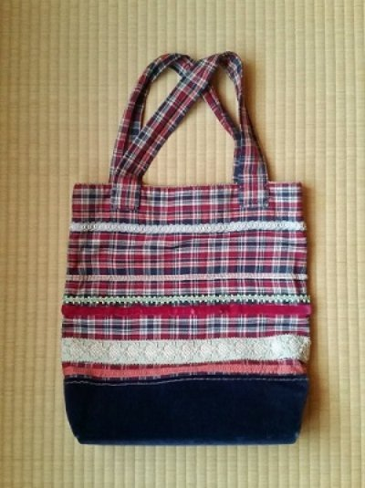
カジュアルパンツをリメイクした手提げ
パリで買ったブレードをつけて
● ２ 応用して、自分の技にする
何かを習って、その先の応用までできて、初めてその人の技になっていくのです。習ったままでは、活かしているとは言えません。
知識を知恵に変える習慣は、ただ賢くなるだけでなく、その発見も喜びです。 情報・知識の有り様にとらわれず、自分なりの使い方・知恵に転換すれば、食品が発酵するように効能が変化するのです。
多分野の情報に詳しかったり、昔のことを良く覚えていたりする方がいますが、私自身は記憶力に自信がなく、頼れる知識がありません。ですから、自分が自分であるためには行動して私としての結果を出し、自分を成り立たせているという感じなのです。
続けてきた花手芸は、壁に当たればそこで曲がって、さまざまな形になりました。曲がった先は別テーマへのチャレンジですが、動力は今まで積んだ応用力を使います。
別テーマとはいえ、道の続きに変わりありません。前に行くならどうするか。そこでの「鍵」になるテーマ、「鍵」になるテクニック、「鍵」になる素材など、何をどうするか発想力が生かされます。
アレックス・Ｆ・オズボーン（元米国の広告代理 店 BBD O （ 現 BBDO Worldwide Inc . ）の副社長）が作った発想法で 、9 つのチェックリストに答えることで発想する方法、「オズボーンのチェックリスト法」があります。
1 ．転用 2 ．応用 3 ．変更 4 ．拡大 5 ．縮小 6 ．代用 7 ．置換 8 ．逆転 9 ．結合
これに当てはめて 、9 つの展開を作り出す方法です。数式のように当てはめれば、正解はいざ知らず、答えを出すだけならさほど難しくはありません。
「自分らしく」、「楽しく」、「大人っぽく」、「○○風」・・・
イメージの応用は、想像力が原動力。感性の柔軟体操をするつもりで、チェックリスト法も活用するのも良いのではないでしょうか。
たくさんの生徒さんの小さなドタバタ劇（成長過程）を見させてもらいました。できて喜び、できずに悩み、形が変わって大笑い。
ある程度の形にするのは、それほど難しくないのですが、「その人らしい」という世界が安定してくるまで は3 歩進んでと、それなりの時間が掛かります。
中には、応用が苦手なタイプもいます。共通点は、控えめ、まじめ、慎重派。ですが、慎重さは欠点ではありません。自分のペースで、新たな一面を表現すればよいのです。こちらは着実ですから、私としては、ある意味、うらやましい。
反対に、チャレンジ精神がある、失敗してもへこたれない、そんな方は、どんどん前に広がりますが、あまり懲りないという面は良いか悪いか... です。
「自分が出したアイデアを、少なくとも一回は人に笑われるようでなければ、独創的な発想をしているとは言えない」とは、ビル・ゲイツの言葉です。
遠回りや無茶な挑戦も、確信を持ってすれば、結果はどうあれ肥やしになります。自分流であっても、感覚の理解、手ごたえが深まってくるのを感じることができるでしょう。
笑われるのも、「あの人だから」と可愛がられるくらいになって、視界の広い人生に自分のできることを彩りよく積み上げたいものです。
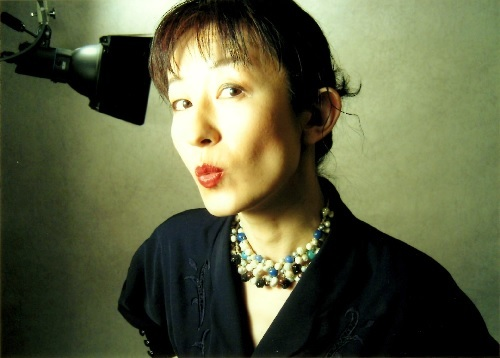
200 4 東京
フランスのペップ（花芯の材料）のチョーカー
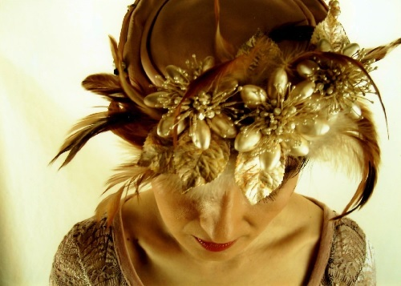
200 4 東京
フランスペップを花に組んだ帽子飾り
● ３ 工夫力は、心の基礎体力
応用が広げる意識なら、工夫は短縮、近道探しでもあります。
工夫ができれば、時間短縮、労力削減。効率がよくなり、仕事が楽になります。
コサージュ作りも、日常生活も、同じ作業を繰り返す場面が多々あります。そこで「この方がいい」と思いつくと、にこっとなりますから、これは小さな幸せ探しです。
結果が同じなら作業は簡単な方がいい。一番効率の良い方法を見つけ出すのは、クイズを解くのと同じように想像力が活躍します。
コサージュ作りでは、同じ花びらを何枚も切るときに、できるだけ重ねて切ります。時間的な効率はもちろんですが、手芸の人たちがなりやすい腱鞘（けんしょう）炎などへの影響も考えれば、身体への負担も考慮した方法を選びます。
ちょっとしたことですが、ハンカチを畳むように４つ折りにした生地から 、4 枚重ねで花びらを取るとき、袋のところから取り始めると、残りの生地の真ん中に穴が開くので、全体の生地の中心部分を残すように型紙を配置します。残りをまとまった形にしておく方が、次の時に使いやすいからです。
また、正方形の生地を用意する場合、全部の必要な分を取り出して、簡単 な4 つ折り や8 つ折りを利用してはさみを入れていきます 。5×5 ｃｍの生地 を8 枚切るなら 、5× 4 0 ｃｍを半分、半分、半分です。
材料、時間、作業条件の掛け合わせ。最もスマートな方法を見つけるには、経験と想像力が必要です。プロのスポーツ選手や職人さんの動きは、無駄がありません。鍛錬と経験による効率の良い工夫がなされているからです。
花びら を1 枚ずつていねい（？）にカットし始める生徒さんに、「ほら、こうするとね」と見せれば、「あっ、そうか」とわかるようなことなら、どうにかして気がつかせたい。
手芸のおもしろさの一つは、ここ。「工夫」の発見です。ですから、教えたいけど教えられない。見いだすためにどこまでヒントを出すかというのも、生徒さんと私との駆け引きになってきます。
「気付いて、気付いて！！」
気が付くと気が付かないでは、全然違ってしまうのです。考えるテンポが違ってくるのですから、生き方が違ってしまうのです。
教えれば理解してもらえます。ですが、気づく力のすごさを理解して、もっともっと工夫を見いだす力を育ててあげるべきです、特に小さな子供たち。
「ぬいぐるみを買ってもらって遊んだ子と、作って遊んだ子と、どちらがいいお母さんになりますか」
手芸の大切さを伝えるとき、この問いかけがあれば、それは十分に伝わります。
作る意欲、素材の感触、失敗も、完成の喜びも、ともについてくる。物を大事にする心、愛情を掛ける対象を自ら作る幸せ。その中にどれだけの新しい気づき、新しい感情が生まれることでしょう。その気づきが芽を出せば、前向きな姿勢、「工夫力」ともいえる賢さの基礎体力がついてくるのです。
気づくことができる、想像することができる。さらに、それが人の気持ちがわかる、客観視ができるという人間力につながっていくのです。
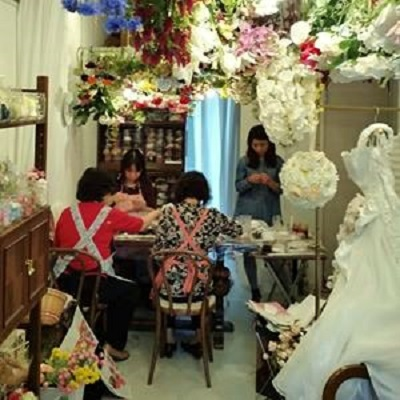
東京クラス レッスン中
● ４ 作品は、自分の分身です
私のアトリエは、花のついた麦わら帽子や、作品の写真が壁面を埋めています。作品、本の掲載作品、値札の付いた商品、いつ花になるかわからない布、こまごました材料と道具、本や資料などなど、物が増え続ける一方で、おしゃれな空間とはとても言い難い状況です。
それでも、作品の一つ一つはかけがえのないもので、それぞれの存在に私との関係性がそれぞれあるのです。
ですから、すっきりとした気持ちのいい部屋とは違いますし、素敵なインテリアの部屋とも違います。それでも「自分の分身」だらけなのですから、私にとって良くも悪くも「居場所」なのです。
ここのアトリエにいらっしゃったゲストの方は、私の花に感激してくださいますが、あまり褒められるのも照れくさい感じがあるし、何も言われないのも、ちょっとさみしい気もするし、複雑です。
「自分の子供と他人の子供では、「かわいい」の意味合いが違うように、自分の作品というのは、人で言えば、血がつながっている感覚があって、比較にならないものなのです。
自分しかこの花たちに対して知らないことがあるからです。作ってきた、育ててきた過程があるからです。私にとっては、素敵も、きれいも通り超えた自分の分身なのです。
この存在は、買って手に入るものではありません。人生のドラマの共演者たちなのです。小さくても、未熟でも、自分の手で作りだしたものは、私自身を支えてくれるものなのです。
これは、ある生徒さんのお話です。
レッスンで作ったコサージュとそこから練習したものなどを透明ケースに入れ、引出しいっぱいに保管していました。
遊びに来た幼い女の子のお孫さんがその引出しを見つけ、「バアバ、きれいね、きれいね、、」と何度も何度も彼女に言ってきたそうです。彼女の制作は、そのお孫さんのためのお花が増えました。
バアバの株が上がりました。バアバはお孫さんにとって、偉大な人になったのです。
たとえば、ヒット商品を作り、たくさんの人に喜んでもらうのも素晴らしいことです。
ですが、一人のお孫さんのために気持ちを込めた作品は、その人たちの人生の宝物になるのです。
バアバの作ってくれたコサージュで、どれだけ心が強くなったことでしょう。小さな彼女は、バアバが大好きになるでしょう。褒められたくて、遊びも学びも一生懸命やるようになるでしょう。お花作りも手を出したくなることでしょう。
また、先日、手作りが大好きな生徒さんに、着物地の手縫いで作ったバッグインバッグを頂きました。このぬくもりにありがたいとしか言いようがなくて。少し不ぞろいの縫い目は、一針一針の動きが見えるようです。
いつも生き生きしていらして、月 に1 度、新幹線にも乗って佐野まで来てくださいます。
その方、娘さんの練習用のブーケが完成しました。本番は未定ですが、一番良い時期になることでしょう。ご本人も娘さんも幸せだと思います。
手作り作品は、ただの物ではありません。そこに気持ちが乗るのです。そこに作者の存在があるのです。
作者にとって自分の一部であり、家族にとって、友人にとって、それは熱々のエネルギーなのです。
会話があって家族関係があるように、手芸もその役を十分に果たせると思うのです。
一人一人が違うように、手作りには、それぞれの意味合いがあるのです。
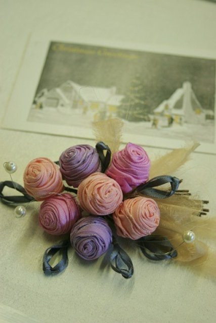
フランス製のリボンで作った
巻きバラのコサージュ
あとがき
「 5 5 歳の私から伝えたい 手芸力 スタイル作り編」をお読みいただき、ありがとうございました。
皆さまの「作る」に少しでもお役にたてばうれしい限りです。
しんみりした話になりますが、先月、父が他界いたしました。偶然か必然か、この時期に、命の重み、残された時間という捉え方、ささやかなことへの慈しみ、そういうことに心が向いた時間となりました。
父からの贈り物というとおかしいですが、その経験も足して、この「手芸力」になったこと、ちょっと、奇跡です。
201 7 年内、続編、「センス磨き編」 では、「学び方」、「素直に生きる編」では、「生き方」について思うことをまとめたいと思っています。
続きます。
梅の開いたころ
201 7年2 月 遠藤 紀子
※著名人の名言等は、インターネットの情報から使用
著書がモデルの写真 撮影 徳光ゆかり
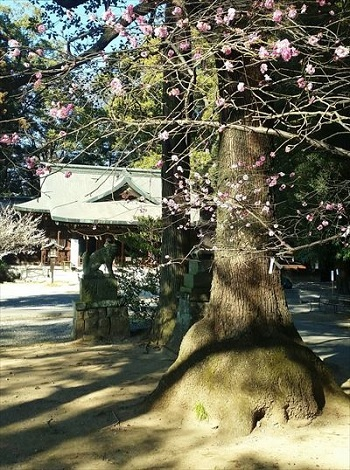
201 7年2月 2 5 日
佐野市 朝日森天満宮にて
著者について

遠藤 紀子 花手芸作家
196 1 栃木県佐野市生まれ
栃木県立佐野女子高等学校普通科卒
文化女子大学短期大学部生活造形科卒
文化服装学院シャポー・アクセサリー科中退
深雪アートフラワー初等科・高等科修了
198 3 (有) アトリエ染花に入社 7年5 か月デザイナーとして勤務
199 0 東京世田谷に工房を構え 、8 年活動
199 8 佐野に転居
201 2 3 月よりアトリエ兼サロン 「 87bunk o」( 花文庫）にて活動
「アート街道６６」（佐野手作り作家集団）所属
http://noriko-endo-87.jimdo.com/
https://www.facebook.com/noriko.endo.7771
https://www.facebook.com/87bunko/?pnref=lhc
遠藤紀子のコサージュ教室
栃木県佐野市本 町 290 0－6 87bunko
〇本書をお買い上げの皆様へ
1 回のみ、体験教室、添削指導を割引いたします。
https://noriko-endo-87.jimdo.com/
著書
198 7 「手作りのコサージュ」（じゃこめてい出版）
199 1 「コサージュのレッスン」（じゃこめてい出版）
200 1 「ペップの花アクセサリー」（世界文化社）
200 2 「遠藤紀子の布のコサージュ」（パッチワーク通信社）
200 6 「遠藤紀子の布のコサージュ」改訂版「たのしい布コサージュ」
200 6 「手作りからまなぶ」（新風舎）
200 6 「カジュアルな花たち」（文化出版局）
200 9 「かわいいコサージュ」（パッチワーク通信社）共著８作品
201 0 「こてなしでカンタン！おしゃれな１００コサージュ」（朝日新聞出版）共 著7 作品
201 0 「遠藤紀子のコサージュ・ブック」（じゃこめてい出版）
200 2 「布で作って作る花と実」（パッチワーク通信社）共著３作品
201 6 電子書籍「コサージュ知恵袋」
https://www.amazon.co.jp/-/e/B004L4AQ7S
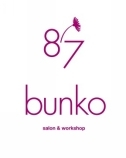
55歳の私から伝えたい
手芸力
スタイル作り編
2017年3月3日 発行
著者 遠藤 紀子
発行 87bunko出版
栃木県佐野市本町2900－6
URL http://noriko-endo-87.jimdo.com/
Copyright 2017 Noriko Endo. All Rights Reserved.
本書の全部または一部を無断で複写することは、著作権法上での例外を除き、禁じられています。